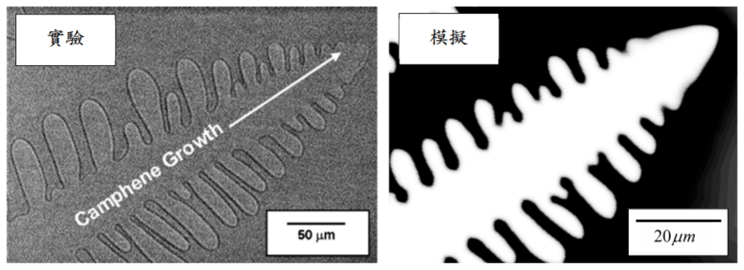

團隊成員
任精瑋

冷凍鑄造法是仿生多孔材料的熱門製程，藉此產生具有優異性質的材料。其概念是將陶瓷懸浮液冷凍，以冰晶作為鑄模，藉由冰晶的生長推開懸浮液中的粉體，構成複雜的微結構。最終將冰晶昇華，燒結粉體得仿生多孔材料。而調整製程中的參數，如溫度梯度、漿料濃度、冷凍速度，可以產生不同的微結構，也就能得到不同的材料性質。
為研究製程參數對於微結構之影響，需以模擬代替耗時的製程。陳俊杉教授的研究團隊過去成功的以相場法結合二元金屬模型，推導出冷凍鑄造法之模型，並以有限元素法實作。最後與實驗對照，展現出相同的趨勢，也證實了該模型的準確性。

有限元素法在處理複雜的結構時，需要進行大量的運算，冷凍鑄造法模型以單核心CPU運算時，一次完整的模擬可能需要數週甚至數個月的時間。本次計畫即希望透過程式優化及GPU加速，大幅降低模擬的時間，以利於研究的進行。
為加快有限元素法的模擬過程，我們針對最耗時的兩個步驟加速。最耗時的是元素的集合(Assembly)，在有限元素法中，整個場域會被分隔為數萬個小區塊(元素)，計算完各個元素的資料後，需要再將所有元素的資料加進一代表系統的矩陣。
| time step | cpu times for benchmark (sec) | cpu times for this project (sec) |
|---|---|---|
| 0 | 0 | 0 |
| 9000 | 0 | 0 |
| 27000 | 0 | 0 |
| 81000 | 0 | 0 |
| 162000 | 0 | 0 |